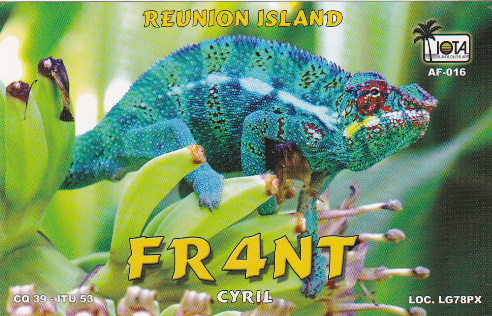

Flash ! DX

 


|
|
|
|

|
|
|
[Back Issues Sep.2014]
TIME:UTC(JST-09:00)
Report from JA1RJU(PM95sq)
30.Sep.2014(15:00g)
VK4WTN 05:00 50.105 CW CQ
VK6AKT 05:05 50.110 SSB CQ
VK5PO 05:09 50.105 CW CQ
VK4RSC/b 05:10- 50.2845 CW Beacon
VK6OX 05:13 50.103 CW @ RST599/579
VK6JJ 05:15 50.106 CW @ RST599/599
VK4WM 05:18 50.102 CW
VK4MA 05:22 50.098 CW @ RST599/599
VK4BG 05:23 50.110 SSB CQ
VK6AKT 05:25 50.110 SSB CQ
VK4WTN 05:29 50.105 CW
VK6KXW 05:30 50.101 CW CQ
VK6RO 05:33 50.110 CW CQ
VK5PO 05:39 50.110 CW CQ
VK4HJ 05:41 50.102 CW CQ
VK4DDC 05:45 50.110 CW CQ
FK8CP 06:05 50.110 CW CQ
VK4BLK 06:13 50.095 WSJT CQ -4dB
FK8CP 07:20 50.110 SSB CQ South east Asia
YB1KI 07:50 50.110 SSB QSO with BG9ITV
YB1KI 08:00 50.120 SSB QSO with YB0AR
YB0AR 08:07 50.120 SSB @ Ferry RS59/59 (via YB9BU Direct)
YB1KI 08:14 50.110 SSB @ Kris RS59/59
VK4ZJB 08:17 50.110 SSB
DU7/PA0HIP 08:17 50.115 SSB
VK4BG 08:20 50.110 SSB CQ
YB1KI 08:44 50.120 SSB CQ still good
YB0AR 08:44 50.120 SSB still good (FTDX-5000+ Dipole)
VK6RSX/b 08:50- 50.304 CW Beacon
UR5FA/MM 09:10 50.110 CW CQ
FK8CP 09:50 50.110 CW CQ
VK4WM 09:52 50.110 SSB CQ
VK4RTL/b 10:00 50.282 CW Beacon
VK4RSC/b 10:00- 50.2846 CW Beacon
VK6RSX/b 10:00- 50.304 CW Beacon
Report from JA1RJU(PM95sq)
29.Sep.2014(15:00f)
VK4ZJB 03:33 50.110 SSB
VK4ZJB 03:41 50.110 SSB @ RS59
VK4XE 03:42 50.110 SSB @ Paul RS59
VK2RHV/b 03:53- 50.288 CW Beacon
VK2MAT 04:00 50.110 CW CQ
VK3OT 04:05 50.110 CW @ RST599
VK3XDX 04:19 50.110 CW CQ
VK7DX 04:20 50.110 SSB
VK4YH 04:21 50.110 SSB CQ
VK4AHW 04:22 50.110 SSB CQ
VK4BG 04:28 50.110 SSN
VK4EK 04:29 50.110 SSN
VK4ZJB 04:29 50.110 SSB CQ
FK8SIX/B 04:30- 50.0804 CW Beacon RST599++
VK3HY 04:35 50.1025 CW @ RST569/559
VK4WTN 04:36 50.106 CW CQ
FK8CP 04:37 50.110 CW CQ RST599++
XU7TZG 08:40 50.110 SSB
(FR1GZ 08:46 50.110 CW JA5)
FK8CP 08:57 50.110 CW
VK6RSX/b 13:00- 50.304 CW Beacon
VK8VF/b 13:00- 50.310 CW Beacon
VK6KXW 13:01 50.110 CW CQ
VK6OX 13:07 50.110 CW CQ
DU7/PA0HIP 13:13 50.110 CW CQ
JI1FGX/DU9 13:16 50.113 SSB
Report from JA1RJU(PM95sq)
28.Sep.2014(15:00f)
DU1EV/B 08:20- 50.008 CW Beacon
DU1ET/DU7 08:29 50.127 SSB RS59++
DU1KA 08:31 50.110 SSB CQ
XU7TZG 08:32 50.110 SSB weak (QSL via ON7PP
DU1KA 08:45 50.101 CW RST599+
VK6RSX/b 08:50- 50.304 CW Beacon
VK3XDX 08:53 50.110 CW CQ
DU7/PA0HIP 09:07 50.110 CW CQ
VK5PO 09:33 50.110 CW CQ
VK5PO 09:42 50.110 CW @ John RST599/599
VK5PO 09:44 50.106 CW CQ
VK5PO 09:50 50.110/120 SSB CQ QSY
VK4RHT/b 09:55- 50.281 CW Beacon
VK4RTL/b 09:55- 50.282 CW Beacon
VK4TVL/b 09:55- 50.295 CW Beacon
VK6RSX/b 09:55- 50.304 CW Beacon
UR5FA/MM 10:01 50.110 CW CQ
VK5PO 10:15 50.110 CW/SSB CQ JA
VK8RR 10:21 50.110 SSB CQ
VK8VF/b 10:22- 50.310 CW Beacon
VK8VF/b 13:20- 50.310 CW Beacon
Report from JA1RJU(PM95sq)
27.Sep.2014(15:00g)
LU5FF 00:50 50.097/110 CW weak
LU2FE 01:00 50.107 CW weak
KH6SX 02:37 50.110 CW @ RST579/559
KH7Y 02:45 50.105 CW CQ RST599
VK4BG 03:43 50.110/130 SSB CQ QSY
VK4RSC/b 03:45- 50.2846 CW Beacon (QG63LJ) RST599
VK2RHV/b 03:50- 50.288 CW Beacon Newcastle (QF57SC)
VK2WDD 05:15 50.120 SSB RS59+
VK4BG 05:16 50.130 SSB
VK4RSC/b 05:20- 50.2846 CW Beacon
VK4YH 05:22 50.115 SSB RS59+
VK6RSX/b 06:35 50.304 CW Beacon
VK4BG 06:53 50.110 SSB CQ JA
4W6LU 11:30 50.305 RTTY
4W6LU 12:30 50.305 RTTY
Report from JA1RJU(PM95sq)
26.Sep.2014(15:00d)
VK4WTN 03:30 50.110 CW QSO with KH6
VK4BG 03:33 50.110 SSB QSO with KH6SX
VK4DDC 03:55 50.110 CW QSO with KH6SX
VK4BLK 04:36 50.110 CW CQ
VK4BG 04:48 50.110 SSB CQ
Report from JA1RJU(PM95sq)
25.Sep.2014(15:00f)
V73SIX/B 03:30- 50.0117 CW Beacon RST599
VK4MA 04:20 50.102 CW CQ
ZL2WHO/B 04:25- 50.024 CW Beacon RST599
ZL2WHO 04:30 50.110 SSB @ Mark RS57
VK4MA 04:35 50.102 CW
VK4EK 04:36 50.110 CW
ZL2WHO 04:40 50.110 SSB still RS59
V73SIX/B 04:45- 50.0117 CW Beacon RST599
VK4AFL 04:45 50.110/177 SSB CQ QSY
ZL2WHO 04:52 50.110 CW CQ
VK4EK 04:54 50.110 SSB RS59
VK4RTL/b 04:57- 50.282 CW Beacon
VK4TVL/b 04:57- 50.295 CW Beacon
VK4WTN 05:00 50.107 CW
VK6RSX/b 05:03 50.304 CW Beacon
ZL2IO 05:05 50.105 CW @ RST579
VK4TVL/b 05:12- 50.295 CW Beacon
4W6LU 07:12 50.310 RTTY
4W6LU 07:17 50.110 CW @ UP1(QSL via JA7LU=SASE+2$)
DU1EV/B 07:25- 50.008 CW Beacon
JI1FGX/DU9 07:25 50.130 SSB RS59+
4W6LU 08:10 50.110 CW CQ CQ UP
DU3LA 08:13 50.106 CW @ RST599+
4W6LU 08:50 50.110 CW CQ UP RST589
VK6RSX/b 08:50 50.304 CW Beacon
UR5FA/MM 09:39 50.110 CW CQ OG99 RST599
VK4RHT/b 09:45- 50.281 CW Beacon RST599
VK4RTL/b 09:45- 50.282 CW Beacon
Report from JA1RJU(PM95sq)
24.Sep.2014(15:00e)
VK4WM 03:20 50.110 CW CQ
VK4AFL 03:23 50.110 SSB CQ
VK4AMG 03:24 50.110/103 CW CQ
VK4WTN 03:43 50.105 CW CQ
VK4ZJB 03:53 50.110/140 SSB CQ
VK4BLK 05:53 50.110 CW CQ
VK6OX 07:30 50.110 CW CQ
VK3XDX 08:41 50.110 CW CQ
VK3XDX 08:43 50.110 CW @
VK3XDX 09:07 50.110 CW RST599 CQ CQ
Report from JA1RJU(PM95sq)
23.Sep.2014(15:00d)
VK4RHT/b 09:20- 50.281 CW Beacon Evening Type TEP RST599
VK6RSX/b 12:10- 50.304 CW Beacon
VK8VF/b 12:10- 50.310 CW Beacon
4W6LU 12:17 50.120 SSB
4W6LU 12:30 50.120 SSB @ RS55/55 (QSL via JA7LU=SASE+2$)
VK4RHT/b 12:40- 50.281 CW Beacon
VK6RSX/b 12:40- 50.304 CW Beacon
VK8VF/b 12:40- 50.310 CW Beacon
UR5FA/MM 13:15 50.1115 CW
Report from JA1RJU(PM95sq)
22.Sep.2014(15:00c)
VK4RHT/b 05:55- 50.281 CW Beacon RST599
VK6RSX/b 07:35- 50.304 CW Beacon
VK4RHT/b 09:45- 50.281 CW Beacon Evening Type TEP RST599
Report from JA1RJU(PM95sq)
21.Sep.2014(15:00b)
Report from JA1RJU(PM95sq)
20.Sep.2014(15:00c)
VK4BLK 09:00 50.110 CW CQ
VK4RHT/b 11:35- 50.281 CW Beacon RST599
VK6RSX/b 11:35- 50.304 CW Beacon weak
Report from JA1RJU(PM95sq)
19.Sep.2014(15:00c)
VK4RHT/b 09:25- 50.281 CW Beacon RST599
VK6RSX/b 09:25- 50.304 CW Beacon
Report from JA1RJU(PM95sq)
18.Sep.2014(15:00e)
DU7/PA0HIP 08:15 50.105 CW RST599
VK6RSX/b 10:10- 50.304 CW Beacon
VK6RSX/b 12:45- 50.304 CW Beacon
VK8VF/b 12:45- 50.310 CW Beacon
UR5FA/MM 12:45 50.110 CW
VK4RHT/b 13:00- 50.281 CW Beacon
VK6RSX/b 13:00- 50.304 CW Beacon
VK8VF/b 13:00- 50.310 CW Beacon
UR5FA/MM 13:02 50.110 CW @ OJ92 RS559/599 (FT-655s 10W QSO!)
YB1EHR 13:10 50.110 SSB QSO with UR5FA/MM
UR5FA/MM 13:15 50.110 CW CQ
DU7/PA0HIP 13:25 50.110 CW RST599
VK6RSX/b 14:00- 50.304 CW Beacon
VK8VF/b 14:00- 50.310 CW Beacon
Report from JA1RJU(PM95sq)
17.Sep.2014(15:00d)
VK6RSX/b 06:55- 50.304 CW Beacon
VK6RSX/b 10:30- 50.304 CW Beacon
VK8VF/b 10:30- 50.310 CW Beacon
VK4TL 10:30 50.150 SSB RS59
VK4RHT/b 12:53- 50.281 CW Beacon
VK8VF/b 12:53- 50.304 CW Beacon
VK8RR 12:56 50.110 SSB
UR5FA/MM 12:57 50.110 SSB QSO with VK8RR
UR5FA/MM 13:00 50.115 SSB/CW CQ OJ97
VK8RR 13:13 50.135 SSB CQ
UR5FA/MM 13:21 50.110 SSB CQ
Report from JA1RJU(PM95sq)
16.Sep.2014(15:00e)
V73SIX/B 04:55- 50.0117 CW Beacon
VK4WTN 04:58 50.1055 CW CQ
VK4HJ 05:00 50.110 CW CQ
V73SIX/B 06:13- 50.0117 CW Beacon
9W6EZ 07:20 50.110/113 SSB CQ
DU1/JA3FJE 07:21 50.113/195 SSB RS59+
VK6RSX/b 09:15- 50.304 CW Beacon
VK8VF/b 12:25- 50.310 CW Beacon
Report from JA1RJU(PM95sq)
15.Sep.2014(15:00d)
V73SIX/B 05:15- 50.0117 CW Beacon
V73SIX/B 10:30- 50.0117 CW Beacon
VK4RHT/b 12:00- 50.281 CW Beacon
VK4TVL/b 12:00- 50.295 CW Beacon
VK6RSX/b 12:00- 50.304 CW Beacon
VK8VF/b 12:00- 50.310 CW Beacon
T88KH 13:22 50.115 SSB (QSL via BM2JCC)
DU1EV/B 13:22- 50.008 CW Beacon
VK4RHT/b 13:22- 50.281 CW Beacon
VK6RSX/b 13:22- 50.304 CW Beacon
VK8VF/b 13:22- 50.310 CW Beacon
VK6GS 13:25 50.120 SSB
T88KH 13:37 50.110/115 SSB CQ
DU7/PA0HIP 13:53 50.110 CW CQ
Report from JA1RJU(PM95sq)
14.Sep.2014(15:00e)
FK8CP 04:03 50.110 CW CQ
DU7/PA0HIP 06:14 50.110/105 CW RST599
DU1IST 07:55 50.150 CW RST599
DU1EV/B 08:10- 50.008 CW Beacon
(FO5PN 08:10 50.110 CW into JA6 & DU7)
T88KH 08:22 50.115 SSB @ RS59/57 (QSL via BM2JCC)
DU7/PA0HIP 08:48 50.100 CW CQ
DU7/PA0HIP 13:54 50.110 CW CQ
Report from JA1RJU(PM95sq)
13.Sep.2014(15:00b)
Report from JA1RJU(PM95sq)
12.Sep.2014(15:00d)
VK4ZJB 04:10 50.110 SSB CQ
VK4HJ 04:11 50.110 SSB CQ
VK4AFL 04:21 50.110 SSB CQ
VK4BG 04:23 50.110 SSB CQ
VK4HJ 04:28 50.130 SSB @ RS59
VK4AFL 04:37 50.110 SSB CQ
V73SIX/B 05:25- 50.0117 CW Beacon RST599
V73NS 05:37 50.112 CW @ RST599/599
VK4HJ 05:42 50.105 CW CQ
VK4AFL 06:22 50.110 SSB CQ
DU1EV/B 09:14- 50.008 CW Beacon
Report from JA1RJU(PM95sq)
11.Sep.2014(15:00e)
VK4HJ 04:58 50.110 CW CQ
VK4BG 05:00 50.110 SSB CQ
VK4WTN 05:04 50.105 CW CQ
VK4RSC/b 05:05- 50.285 CW Beacon
VK4AHW 05:07 50.110 SSB CQ
VK4YH 05:10 50.110 SSB CQ
VK4ZJB 05:11 50.110 SSB CQ
VK4YH 05:15 50.120 SSB @ RS59
VK4ZJB 05:16 50.120 SSB @ RS59
VK4BG 05:16 50.120 SSB @ RS59
VK4AMG 05:17 50.120 SSB @ RS59
VK4AFL 05:24 50.110/177 SSB @ RS59
VK4HJ 05:25 50.110 SSB CQ
V73SIX/B 07:05- 50.0117 CW Beacon RST599
DU7/PA0HIP 07:32 50.110 CW CQ RST599+
DU1EV/B 08:30- 50.008 CW Beacon
JI1FGX/DU9 08:54 50.110/130 SSB CQ RS59+
DU7/PA0HIP 09:03 50.105 CW CQ RST599+
FK8CP 09:10 50.110 CW CQ
VK4WTN 09:11 50.110 CW CQ
FK8CP 10:00 50.110 CW CQ
VK4CH 10:01 50.110 SSB CQ
Report from JA1RJU(PM95sq)
10.Sep.2014(15:00c)
DU1EV/B 12:00- 50.008 CW Beacon
VK4RHT/b 12:00 50.281 CW Beacon
VK6RSX/b 12:00- 50.304 CW Beacon
VK8VF/b 12:00- 50.310 CW Beacon
|
◎ 東京地方は夕刻（06:30z）から突然、雷を伴った集中豪雨で”ワッチ”に危険を感じる悪天候となった。三鷹市(PM95sq)でも1時間に80m/mを超える豪雨だった。
引き続き大雨注意報が出ている。
|
Report from JA1RJU(PM95sq)
09.Sep.2014(15:00d)
DU7/PA0HIP 07:40 50.110 SSB RS59
FK8CP 09:06 50.110 CW/SSB CQ
VK4RHT/b 09:30 50.281 CW Beacon
FK8CP 09:48 50.110 CW CQ
VK8VF/b 12:56- 50.310 CW Beacon
DU7/PA0HIP 13:16 50.110 CW CQ
DU1EV/B 13:32- 50.008 CW Beacon
Report from JA1RJU(PM95sq)
08.Sep.2014(15:00e)
DU1EV/B 08:12- 50.008 CW Beacon
DU1/JA3FJE 08:14 50.190 SSB Manira (QSL via JN3VQM)
DU7/PA0HIP 08:15 50.105 CW CQ RST599+
KG6DX 08:22 50.196 WSJT (EME QSO with VE1JF)
DU1GM 09:03 50.102 CW
VK4RHT/b 09:30- 50.281 CW Beacon
9W6EZ 13:28 50.111 SSB CQ
DU7/PA0HIP 13:56 50.110 CW CQ
VK6RSX/b 14:00- 50.304 CW Beacon
VK8VF/b 14:00- 50.310 CW Beacon
YB2TJY 14:07 50.114 CW @ RST599
YB1TJ 14:13 50.125 SSB @ RS59
Report from JA1RJU(PM95sq)
06-07.Sep.2014(15:00b)
「第43回東北6m SSB Group Meeting in 福島」(穴原温泉・いづみや）
Report from JA1RJU(PM95sq)
05.Sep.2014(15:00e)
VK8VF/b 07:45- 50.310 CW Beacon
DU1EV/B 07:55- 50.008 CW Beacon
DU1/JA3FJE 08:04 50.180 SSB @ Manira (QSL via JN3VQM)
9W6EZ 08:22 50.151 SSB CQ RS59
DS2CPL 08:34 50.151 SSB
HL4CHH 08:35 50.104 CW CQ
DU1EV/B 09:00- 50.008 CW Beacon RST599
DU7/PA0HIP 09:05 50.105 CW CQ RST599+
N7ET/DU7 09:15 50.115/127 SSB CQ RS59+
VK8VF/b 12:50- 50.310 CW Beacon
VK8MS 13:16 50.109 CW CQ
Report from JA1RJU(PM95sq)
04.Sep.2014(15:00e)
VK4WTN 05:55 50.110 CW CQ
V73SIX/B 07:05- 50.0117 CW Beacon RST599
DU1EV/B 07:45- 50.008 CW Beacon RST599
KG6DX 07:50 50.105 CW CQ RST599
DU1EV/B 08:15- 50.008 CW Beacon RST599
KG6DX 08:15 50.105 CW CQ RST599
9W6EZ 08:38 50.110 SSB CQ RS59
9M2/JA6GMC 08:47 50.107 SSB @
9M2IDJ 09:13 50.107 SSB @ RS59
N7ET/DU7 09:19 50.121 SSB RS59
DU1EV/B 09:20- 50.008 CW Beacon RST599
9W6EZ 09:28 50.110 SSB CQ
VK4RHT/b 12:05- 50.281 CW Beacon
VK4TVL/b 12:05- 50.295 CW Beacon
VK6RSX/b 12:05- 50.304 CW Beacon
VK8VF/b 12:05- 50.310 CW Beacon
Report from JA1RJU(PM95sq)
03.Sep.2014(15:00b)
Report from JA1RJU(PM95sq)
02.Sep.2014(15:00b)
Report from JA1RJU(PM95sq)
01.Sep.2014(15:00c)
VK4WTN 07:03 50.110 CW CQ RST599